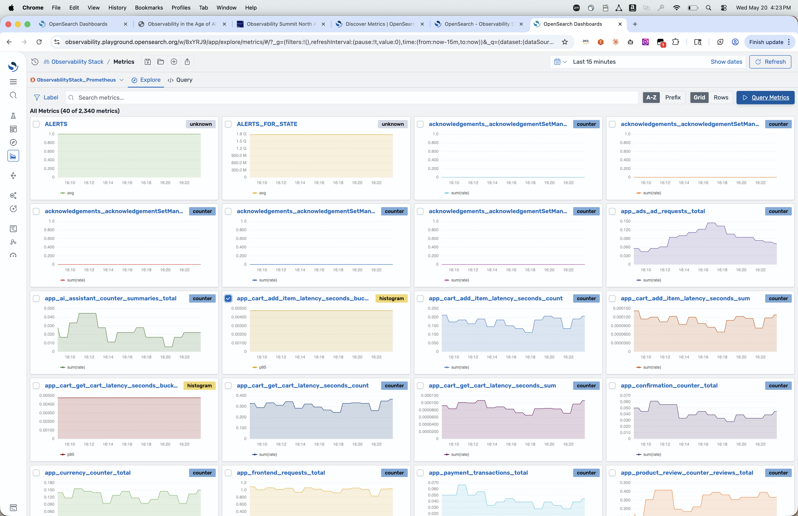
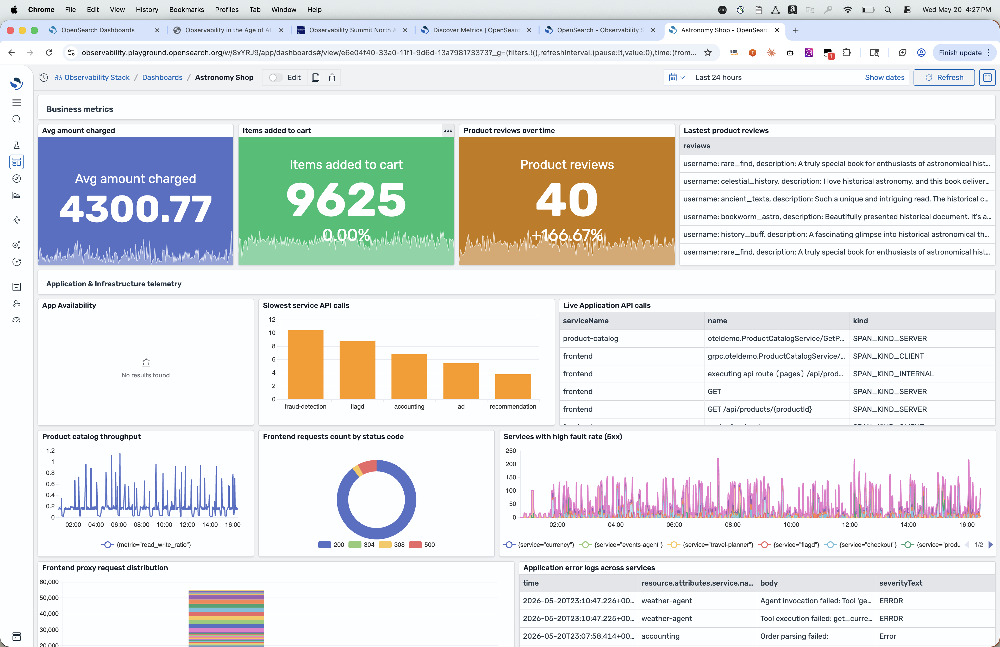
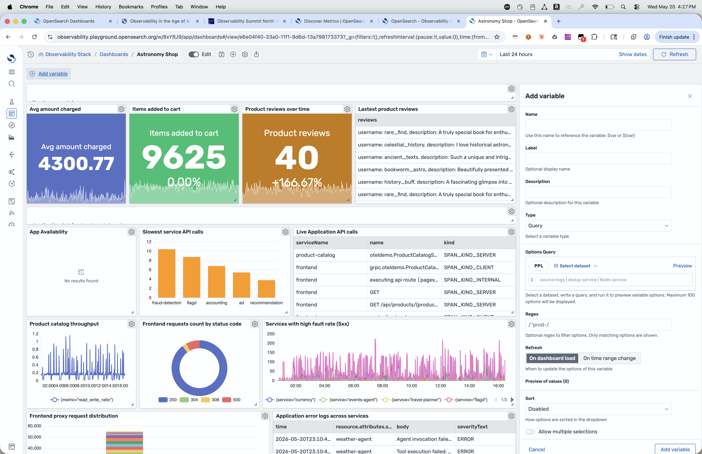
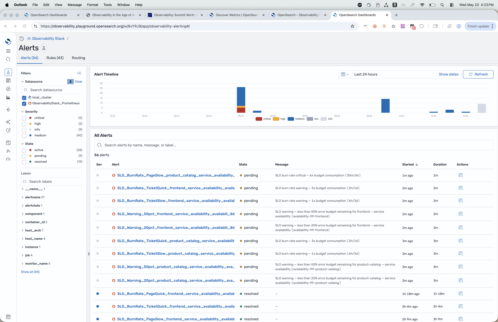
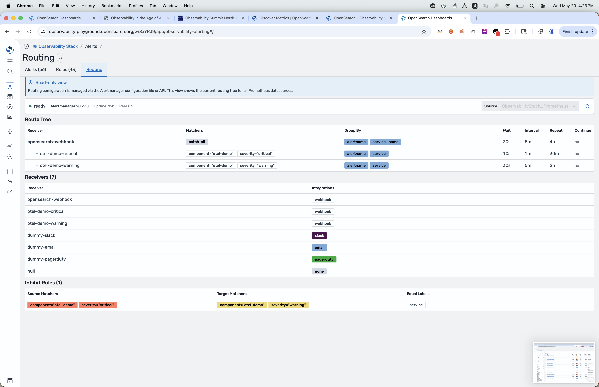
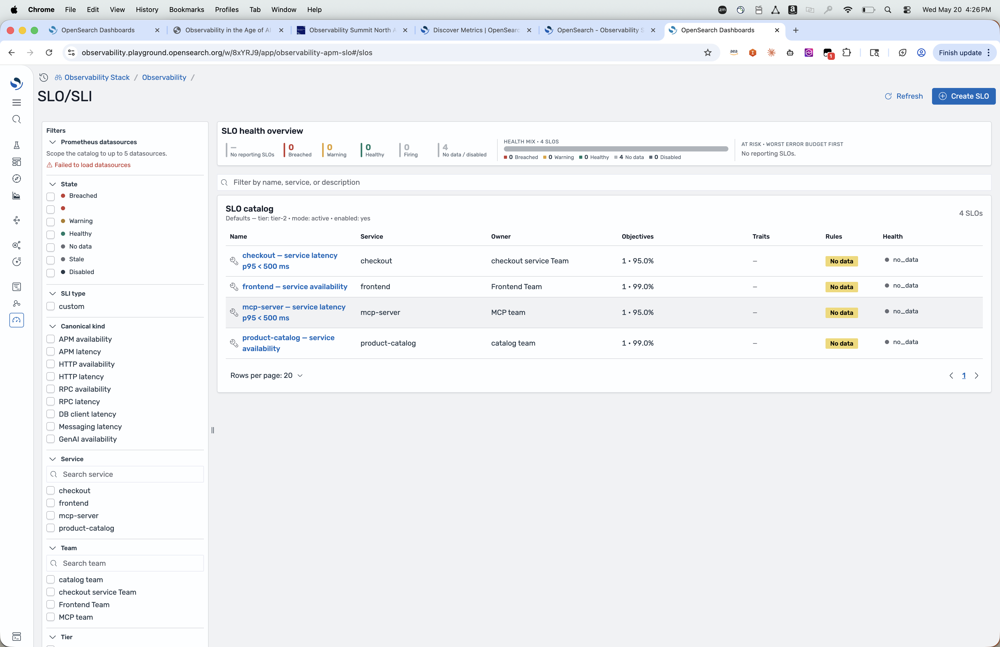

Observability Summit NA · 2026
One Pane to Rule Them All
Uniting the Prometheus community: bringing Prometheus metrics into OpenSearch Dashboards alongside logs & traces
Anirudha Jadhav · AWS, OpenSearch Observability
in
·
Kevin Fallis · AWS
The OpenSearch platform
One open platform: engine + UI + ingestion, all Apache 2.0.
How people use OpenSearch
Four primary workloads on one engine: today we focus on Observability + Prometheus metrics.
Search
Full-text + vector + hybrid search across documents, products, knowledge.
Observability
Logs, traces, and Prometheus metrics: unified for distributed + agentic systems.
Security analytics
SIEM, threat detection, and compliance investigations at petabyte scale.
AI / ML
Vector store, RAG retrieval, and ML-powered ranking inside the same cluster.
Today's focus
Keep your Prometheus metrics.
Get one pane for everything else.
OpenSearch Dashboards now speaks Prometheus metrics natively: PromQL, Alertmanager, rules, and multi-cluster federation. Additive, not replacement.
Agenda
- The pane problem: why "single pane" keeps failing
- Prometheus metrics, natively: design principles & architecture
- Demo I: Discover Metrics & the metrics builder
- Dashboards + variables across logs, metrics, traces
- Demo II: Alerts, SLO/SLI catalog
- How to join: playground, docs, TAG
Part 1
The Pane Problem
Why operators run five tabs to answer one question.
The operator's reality at 3 AM
A page fires. Five tabs open. Three query languages. Two auth systems. One incident.
- Prometheus metrics in Prometheus / federations: your team already runs it, depends on it, can't move off it
- OpenSearch for logs: petabytes, full-text, the system of record for what happened
- A separate tracing tool for traces: the only place to find why
- Stitched together by three SSO logins and tribal knowledge
The "single pane of glass" promise
keeps failing because every vendor wants their pane.
The missing leg of the tripod
OpenSearch already runs your logs and traces. Metrics was the gap. Now closed.
What was already here
- Logs at petabyte scale, full-text + structured
- OTel-native trace ingestion + service maps
- Anomaly detection, alerting, dashboards
- Apache 2.0, vendor-neutral, foundation-governed
What's new in this release
- Native Prometheus metrics datasource: PromQL through the wire
- Discover Metrics: Explore, Row, Columns, Builder, Query
- Variables across logs, metrics, traces in one dashboard
- Alerts + SLO/SLI rendering Alertmanager + recording rules
- Multi-cluster Prometheus metrics datasources under one pane
Part 2
Prometheus Metrics, Natively
We didn't fork the ecosystem. We joined it.
Three rules we held ourselves to
Every line of code in this release had to pass all three.
Rule 01
Don't fork PromQL
Speak it on the wire. Every query the pane builds is a real PromQL query you can copy into recording rules or curl.
Rule 02
Don't replace Alertmanager
Render it. Route it. Make it legible. Your existing alert pipeline keeps running. We just give it a face.
Rule 03
Don't lock data in
Datasources, not silos. Point at a single Prometheus or any Prometheus-API-compatible metrics backend. Same pane, no migration.
How it fits together
OpenSearch Dashboards becomes the read pane for humans and AI. Your Prometheus metrics stack stays the source of truth.
Operators & SREs
PromQL, dashboards, alerts, SLOs in one pane & one API for humans and AI
→
OpenSearch Dashboards
Datasource picker · variables · Discover Metrics · alerts · SLO catalog
→
Your Prometheus metrics stack
Prometheus + Alertmanager (unchanged)
The "one pane" thesis in four pixels
One datasource picker. Logs, traces, Prometheus metrics, multi-cluster federations: all callable from the same dashboard.
datasource:
⚡ OpenSearch · logs & traces
🔥 Prometheus metrics · prod-eu-west-1
🔥 Prometheus metrics · prod-us-east-2
No federation hop. No tab switch. No second auth.
Part 3
Demo I · Discover Metrics
Live on observability.playground.opensearch.org
Live demo · ~5 min
Finding metrics shouldn't feel like archaeology
Grid view · histogram + counter badges · search by name or label.

Discover · Metrics · A–Z
Five tabs, one query language
Click a metric → land in Explore. Refine in Row / Columns. Build with Metrics builder. Drop to raw PromQL any time.
- Explore: instant chart with sensible defaults (rate, p95, sum)
- Row / Columns: pivot label dimensions without re-querying
- Metrics builder: compose PromQL visually; see the generated query live
- Query: paste any PromQL you already have. It just runs.
- Label inspector: discover cardinality before it bites you
Part 4
Dashboards + Variables
One dashboard, three signal types, one time picker.
Business + telemetry on one canvas
Numbers, charts, log tables, donut breakdowns. Prometheus metrics & OpenSearch logs side by side, no iframe trick.

Astronomy Shop · business KPIs + APM + error logs
Variables that span all three signals
Define once with PPL or PromQL. Apply to logs panels, metrics panels, trace panels with the same syntax: $service, ${env}.

Add variable · Query type · Regex · Refresh on dashboard load
Part 5
Demo II · Alerts, SLOs, Multi-cluster
The climax: where the pane actually pays off.
Live demo · ~6 min
Every alert. Every datasource. One list.
Unified view of OpenSearch text/log alerts and Prometheus metrics alerts in one list. Filter by severity, state, label, source.

Alerts · OpenSearch text alerts + Prometheus metrics alerts · severity / state / label filters
Alertmanager, finally legible
Read-only view of your live route tree, receivers, and matchers. We don't take it over. We make it readable.

Routing · receivers · matchers · live from Alertmanager v0.27
SLOs as first-class citizens
Filter by service, team, SLI type, canonical kind. Health overview at a glance. Worst-error-budget-first.

SLO/SLI catalog · 4 SLOs · health mix · at-risk first
Get involved
Open source, vendor-neutral, foundation-governed: build it with us.
Try
Live playground
observability.playground.opensearch.org
Docs
Discover Metrics reference
observability.opensearch.org/docs
Stack
Observability Stack
opensearch.org/platform/observability-stack
TAG
Join the Observability TAG
opensearch.org/slack · #observability
scan · try it live
observability.playground.opensearch.org
Questions?
Anirudha Jadhav · AWS · Kevin Fallis · AWS
observability.playground.opensearch.org · #observability on opensearch.slack.com